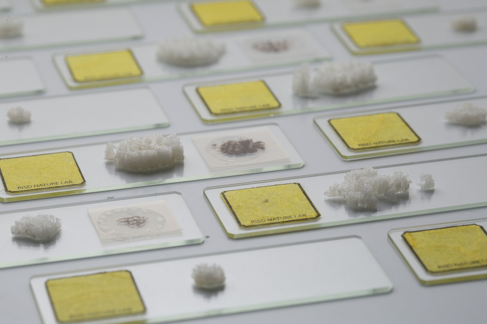

P1ANKT0NS
This is a collaborative research project looking into planktons both scientifically and artistically, imagining machine learning inspired species existing in the natural world through projections and 3D printing.
DESCRIPTION
Although most planktonic creatures are only visible under microscopes, they are crucial aquatic organisms that
marine ecosystems rely on just as binary numeric expression (0 and 1) is fundamental to computing. In the past
few decades, data collection for plankton time series has been completed using traditional techniques and
manual classification. With image classification powered by machine learning algorithms, researchers now have
more robust and accurate systems to identify different kinds of planktons.
Captivated by the morphology of planktons, we wonder what new planktonic creatures can machine generate? Where
might they appear and how might they coexist in different planktonic habitats through projections? We trained
neural networks based on image datasets of planktons, made inland holograms based on machine learning
outcomes, and eventually conducted and documented experiments in oceans and estuaries.
We used annotated plankton images collected by automated submersible imaging-in-flow cytometry at Martha's
Vineyard Coastal Observatory from Woods Hole Oceanographic Institution (WHOI). With the WHOI image database as
input, we successfully trained machine learning models with Runway ML and generated hundreds of plankton
images and latent space videos on Google Colab.
We will present the index of 400 planktons that might not exist in real life but are close to the original
ones, the video of projection experimentations on surfaces such as water, rocks, and beaches, as well as the
artifacts of planktons on microscope slides printed in both 2-dimensional and 3-dimensional forms.
